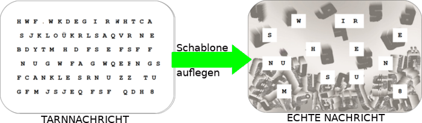

| STEGANOGRAPHIE | |||||||||||||||||||||||||||||||||||||||||||||||||||||||||||||||||||||||||||||||||||||||
|
[Ägypter-Bild]
|
Grüße
aus dem Antiken Ägypten! Was führt dich zu meiner
Pyramide? Nein, ich bin natürlich kein antiker Ägypter, sonst müsste ich ja über 3000 Jahre alt sein! Ich bin nur ein sehr engagierter Historiker der antiken geheimen Kommunikation. |
||||||||||||||||||||||||||||||||||||||||||||||||||||||||||||||||||||||||||||||||||||||
| Solltet
ihr mal
einem Kryptologen über den Weg laufen, so wird er oder sie
euch
sicherlich sagen, dass Steganographie "nicht so sicher" wie die
Kryptologie ist. Ich finde, das ist Unsinn! Durch die Kryptologie
werden Nachrichten unverständlich gemacht. Aber mit der
Steganographie, der Lehre des "Verdeckten Schreibens", verschwinden die
Nachrichten völlig! EIn möglicher feindlicher Spion
wüsste gar nicht erst, dass unter seiner Nase kommuniziert
wurde. Meiner Meinung waren schon die Antikesten Völker! Na gut, vielleicht wussten sie es auch nicht besser. Auf jeden Fall hatten Bewohner des alten Ägypten eine sehr ausgefallene Methode um gemeime Nachrichten zu verschicken. Anstatt einem Boten eine Papyrusrolle zu geben, rasierten sie diesem die Haare ab, und schrieben die nachricht auf seinem Kopf! Dann war erstmal Warten angesagt. Waren die Haare wieder zurückgewachsen und die Nachricht unsichtbar, schickten sie den Boten los. Selbst wenn dieser überfallen wurde, blieb die Nachricht versteckt. Ziemlich clever nicht? Aber nicht so praktisch… wer lässt sich schon gern die Haare abrasieren, du etwa? |
|||||||||||||||||||||||||||||||||||||||||||||||||||||||||||||||||||||||||||||||||||||||
|
|||||||||||||||||||||||||||||||||||||||||||||||||||||||||||||||||||||||||||||||||||||||
Da hatten die alten Römer schon eine bessere Idee als die Ägypter. Sie schnitzten ihre Nachrichten auf Holz, überdeckten diese Holzplatten mit Wachs, und ritzten wiederum im Wachs eine Tarnnachricht ein. Solche Tarntexte werden in der Steganographie oft benutzt. So glaubt ein Spion zwar, die richtige Nachricht gefunden zu haben, und sucht gar nicht erst nach der echten! Um neugierige Eindringlinge mit einer Tarnnachricht braucht man nicht unbedingt Holz oder Wachs. Du kannst auch mit diesen Schablonen mit deinen Freunden geheim kommunizieren. Das geht so: |
|||||||||||||||||||||||||||||||||||||||||||||||||||||||||||||||||||||||||||||||||||||||
|
|||||||||||||||||||||||||||||||||||||||||||||||||||||||||||||||||||||||||||||||||||||||
|  | |||||||||||||||||||||||||||||||||||||||||||||||||||||||||||||||||||||||||||||||||||||||
|
Linguistische
Steganographie
Linguistische
Steganographie arbeitet genauso wie
die klassische Steganographie mit dem Verstecken von Nachrichten und
dem Erstellen von Tarnnachrichten. Man benutzt dabei aber keine
besonderen Sachen wie Tinte oder Schablonen, sondern nur
Wörter.
Wie das geht erkläre ich am besten mit einem Beispiel.Die Bacon Chiffre: Die Bacon Chiffre ist eine Kombination aus einer Codierung und einem Tarntext. Stellen wir uns vor, das ist unsere geheime Nachricht in Klartext: Mathe Zuerst codieren wir unsere Nachricht mit dem ALphabet-Index-Code, und codieren diesen wiederum mit dem Binärcode. Wie diese Codierungen genau funktionieren kannst du auf der Randspalte unter CODIERUNGEN herausfinden. Hier findest du erstmal eine Übergangstabelle für die Buchstaben A - Z: |
|||||||||||||||||||||||||||||||||||||||||||||||||||||||||||||||||||||||||||||||||||||||
|
|||||||||||||||||||||||||||||||||||||||||||||||||||||||||||||||||||||||||||||||||||||||
| Mathe ergibt dann: 01100 00000 10011 00111 00100 Jetzt überlegen wir uns einen Geheimtext. Wichtig ist, dass dieser mindestens so lang ist wie der Binärcode, also fünf mal so lang wie der ursprüngliche Geheimtext: Englisch und Kunst und Physik Jetzt schreiben wir Geheimcode und Tarntext untereinander auf, und schreiben dann alle Buchstaben, die unter einer 1 stehen groß, und alle Buchstaben , die unter einer 0 stehen, klein. 0 1 1 0 0 0 0 0 0 0 1 0 0 1
1 0 0 1 1 1 0 0 1 0 0
E n g l i s c h u n d K u n
s t u n d P h y s i k
_____________________________________________________________
e N G l i s c h u n D k u N S t u N D P h y S i k
Und die Nachricht wurde versteckt! Die letzte Zeile können wir einem Freund schicken, der dann Groß- und Kleinbuchstaben mit Zahlen ersetzt, die Zahlen decodiert, und dann sofort weiß, dass unser Lieblincgsfach nicht, Englisch, Kunst oder Physik ist… sondern natürlich Mathe! |
|||||||||||||||||||||||||||||||||||||||||||||||||||||||||||||||||||||||||||||||||||||||